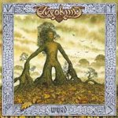

|
|
||
Elvenking : Wyrd (2004) |
|

http://www.elvenking.net |
1. The Loser's Ball 1:49 |
9.3/10 |
|
Éste es el segundo álbum de la banda italiana Elvenking tras su disco debut, de eso hace ya más de tres años, Heathenreel. Power metal aderezado con música tradicional, folk, de ascendencia centroeuropea con aires irlandeses, celtas... (¿se podrá llamar a eso folk-fusión? ;-), de forma que las guitarras, los sintetizadores y los violines conviven en bastante buena armonía. "The Loser's Ball" es una intro acústica, con voces masculina y femenina y de sonido muy folk, con cierto toque celta, llevado básicamente por el violín. "Pathfinders" arranca, como cualquier tema cañero de power metal, con el doble bombo cimentando una melodía elaborada y un tema bien estructurado, con cambios de ritmo, solos de violín y algunos gruñidos ocasionales, en una mezcla dispar pero bien ligada, sólida y que será sin duda el momento álgido en los conciertos. "Jigsaw Puzzle" es otra pieza rápida, nacida de un exitoso matrimonio entre violines y guitarras distorsionadas. El folk vuelve al protagonismo en "The Silk Dilemma", que marca un ritmo mucho más cercano a cierta música tradicional europea (¿irlandesa, o quizás alpina...?) que al heavy metal, pero con un resultado francamente bueno. "Disappearing Sands" arranca con una melodía de un cuarteto de cuerda, pero pronto se convierte en una pieza de metal contundente y veloz. En "Moonchariot" encontramos una sabia alternancia entre partes eléctricas y acústicas, con protagonismo para los violines en estas últimas, muchos cambios de ritmo, y algunos coros y gruñidos que enfatizan, con distintos matices, ciertas partes de este gran tema. "The Perpetual Knot" es otra canción con base folk, bien combinada con el doble bombo, aplicado con moderación pero con criterio, y donde las voces de acompañamiento son cantadas por Metti Zimmer, cantante de Perzonal War. "Another Haven" es otra de las joyas de este álbum, de ritmo medio/alto, fantásticas melodías a cargo de los violines, incluyendo un lento pero emocionante solo, y cambios constantes de ritmo y atmósfera. "A Fiery Stride" es la primera canción que escribió Elvenking, y según ellos mismos cuentan la rescataron de una vieja cinta, la retocaron un poco y la han incluído aquí: y como no incluye todos los elementos esperables de este grupo, como los violines, los coros y algunas voces desgarradas que le dan ese toque justo de crudeza. "Midnight circus" recupera el doble bombo para crear un estilo de metal más típico, con estribillo pegadizo y todo. Una interesante pieza instrumental introduce "A Poem for the Firmament", canción larga pero variada, con algunas partes acústicas, ritmos cambiantes, una voz femenina, y algunos coros realmente fantásticos, un temazo. Muy bien. No hace falta decir mucho más: este disco es muy bueno, y Elvenking ha sido un descubrimiento para mi. Si te gusta el power metal, e incluso si otras propuestas de folk metal no son de tu interés (p.ej. Cruachan, o Finntroll, que son bastante diferentes a Elvenking, además de entre si) este disco te gustará. Seguro. Bueno, casi seguro... ;-) |
||
- Crítica escrita por Rubén Béjar - |
||